|
PeriDEM 0.3.0
PeriDEM -- Peridynamics-based high-fidelity model for granular media
|
|
PeriDEM 0.3.0
PeriDEM -- Peridynamics-based high-fidelity model for granular media
|
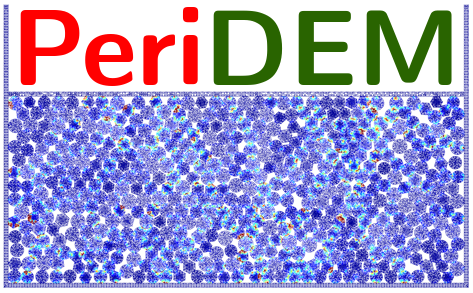
Implementation of the high-fidelity model of granular media that combines the advantages of peridynamics and the discrete element method (DEM). The model has the following advantages over existing mechanical models for granular media:
For more details about the model and results, we refer to the paper:
Prashant K. Jha, Prathamesh S. Desai, Debdeep Bhattacharya, Robert P Lipton (2020). Peridynamics-based discrete element method (PeriDEM) model of granular systems involving breakage of arbitrarily shaped particles. Journal of the Mechanics and Physics of Solids, 151, p.104376. Doi https://doi.org/10.1016/j.jmps.2021.104376. Download pdf here.
PeriDEM is published as a software article in the Journal of Open Source Software:
Prashant K. Jha (2025). PeriDEM – High-fidelity modeling of granular media consisting of deformable complex-shaped particles Journal of Open Source Software, vol. 10, 116, p.7525, DOI 10.21105/joss.07525. Download pdf here.
We have created channels on various platforms:
Doxygen generated documentation details functions and objects in the library.
We next highlight some key examples. Further details are available in examples/README.md.
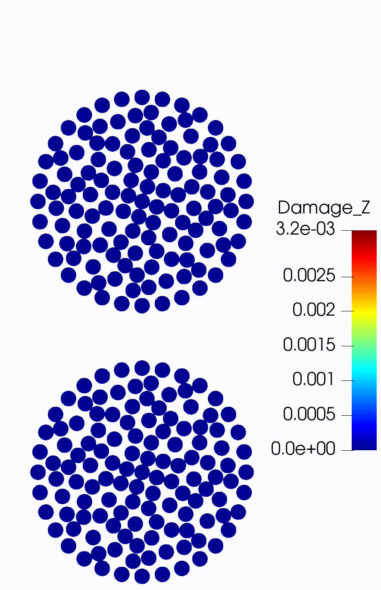 | |
|---|---|
| Circular without damping | Circular with damping |
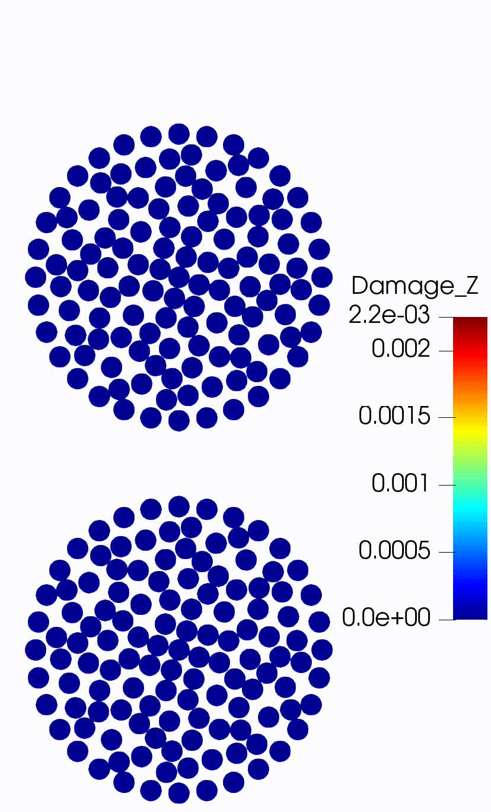 | 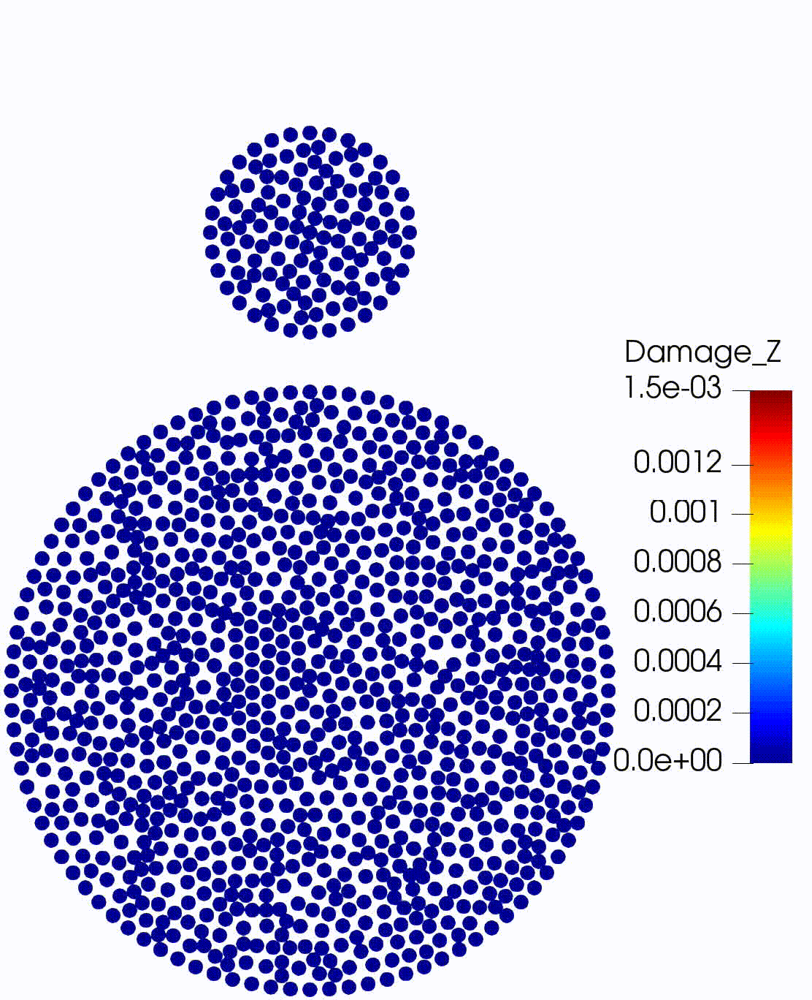 | |
|---|---|---|
| Different materials | Different radius | Different radius different material |
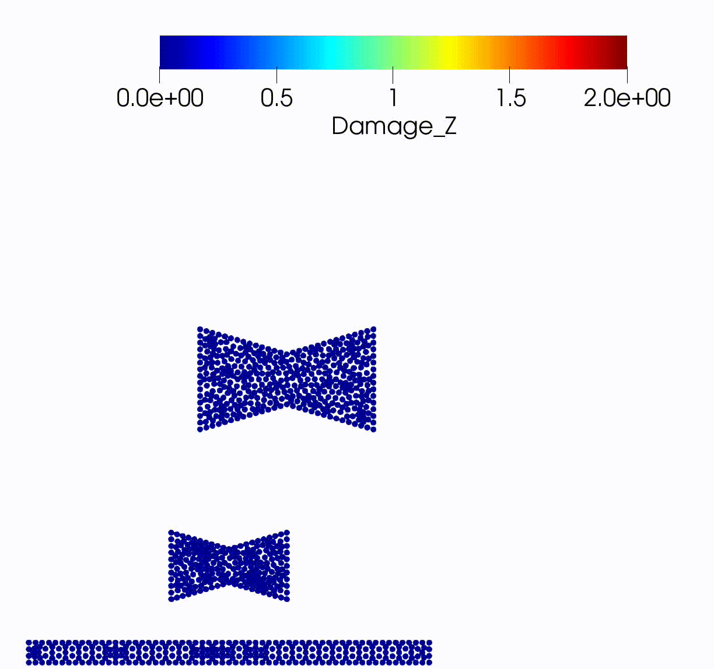 |
|---|
| Concave particles |
Paper setup (Jha et al. 2021): 502 circular and hexagonal particles in a rectangle container; the top wall moves downward at fixed speed. Reaction on the moving wall rises with penetration; damage then concentrates along force chains and the pack yields. Runnable decks: small pack n12 and paper-scale two-stage n500. Details: Jha et al. 2021.
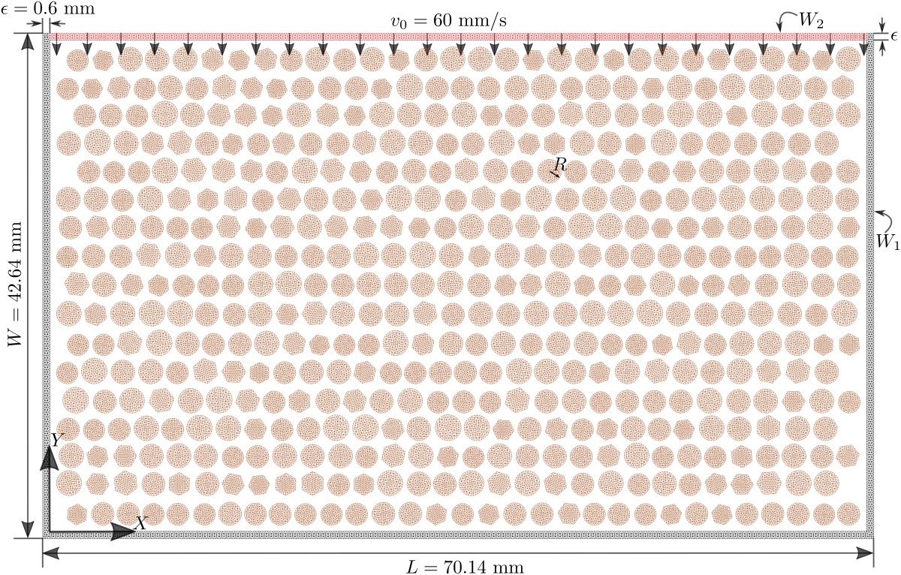 | 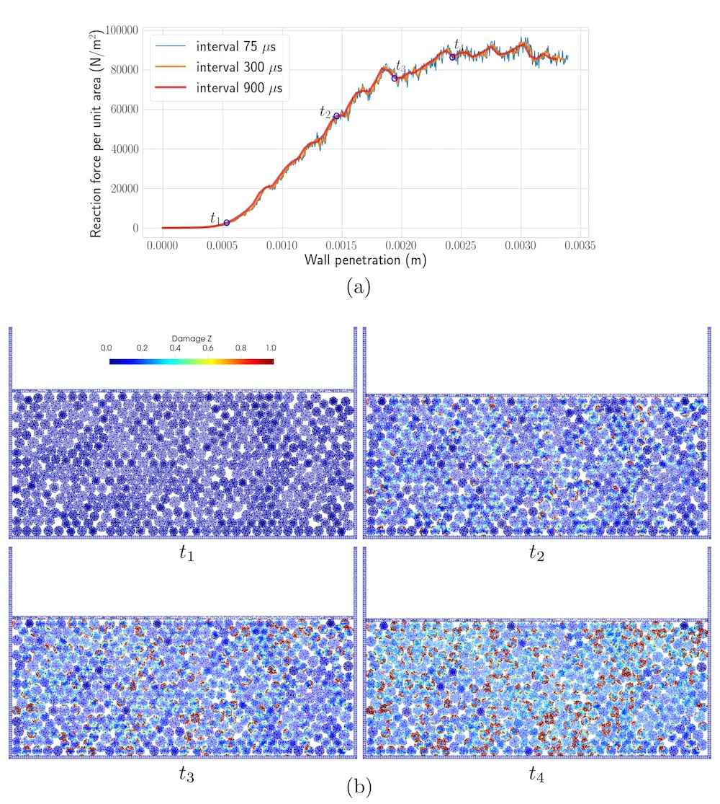 |
|---|---|
| Pack geometry (N≈502) | Wall reaction and damage frames |
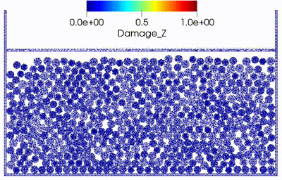 |
|---|
| Compressive test simulation |
Mix of circular, triangular, hexagonal, and drum-shaped grains in a rotating container (size and toughness vary). Portable JSON decks:
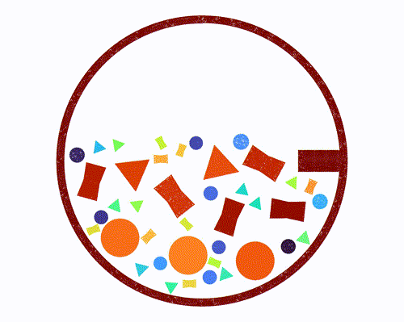 | 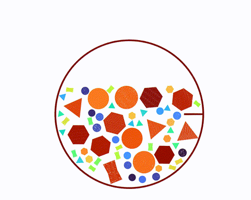 |
|---|---|
| Rotating cylinder (setup) | Thin container, offset rotation (setup) |
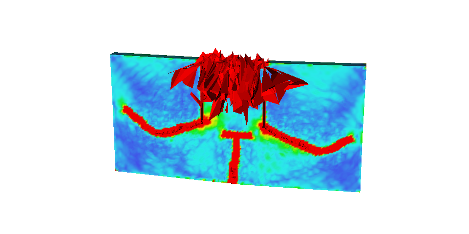 |
|---|
Silling KW 3D notched plate (setup, ./run_3d.sh) |
Model.Particle_Sim_Type = Single_Particle. JSON demos: examples/Peridynamics.
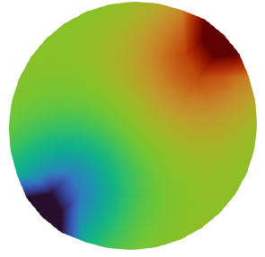 | 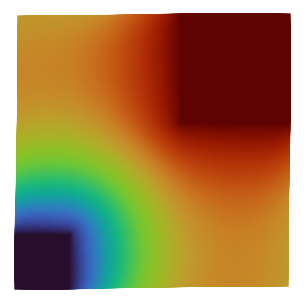 |
|---|---|
| Circle (setup) | Rectangle / CreateMesh (setup) |
The simulation driver is class PeriDEMModel in PeriDEM/. Libraries live under src/. PeriDEMModel::run() initializes the simulation, optionally restarts, then hands the time loop to time_int::Integrator.
init() creates particles, sets up contact and quadrature data, builds neighbor lists and peridynamic bonds, and initializes loading.
PeriDEMModel::integrate() calls time_int::Integrator. The integrator applies initial conditions, displacement BCs, and forces, then advances with central difference or velocity Verlet using data::ModelData kinematics accessors. After each step it writes output and calls checkStop().
Contact::computeForces walks neighbors. The node-node relation is contact::PairForce; damping is contact::Damping. A different pair law is a PairForce subclass set with Contact::setPairForce — do not copy contact.cpp.
See periDEMModel.cpp, src/time_int/integrator.h, and src/contact.
The pixi.toml file defines the dependencies and build instructions for the library. It should be used to create a reproducible environment and build the code using Pixi and CMake.
To install the Pixi package manager, follow the instructions at the official installation page.
Core dependencies are:
Following dependencies are included in the PeriDEM library in external folder (see external/README.md for more details):
If all the dependencies are installed on the global path (e.g., /usr/local/), commands for building the PeriDEM code is as simple as
:exclamation:
cmakeandmakecommands should be run inside thebuild
directory. You can create the build directory either inside or outside the repository.
In-process import peridem (nanobind). See python/README.md.
git clone ... && cd PeriDEM; create a build dir wherever you like—build inside the source is assumed below): bin/PeriDEM (source: PeriDEM/), shared libs in lib/, headers in include/, and the CMake package files under lib/cmake/PeriDEM./tmp/peridem-consumer/CMakeLists.txt. A minimal main.cpp in the same folder: /tmp/peridem-consumer): FindMetis.cmake and FindGmsh.cmake), plus their transitive libraries. Ensure these are installed and discoverable (e.g., via CMAKE_PREFIX_PATH or system paths) when configuring consumers. Bundled headers (nlohmann_json, nanoflann, csv, taskflow) are installed with the package.Decks are independent of MPI mode. Set Model.MPI_Strategy in the JSON input:
| Value | Meaning |
|---|---|
auto (default) | Multi_Particle → Particle-MPI; Single_Particle → DOF-MPI |
none | No domain split (mpirun -n 1) |
particle | Particle-MPI: distribute whole particles across ranks |
dof | DOF-MPI: distribute nodes/DOFs across ranks |
u/v to every rank.-nThreads) combine with MPI.Identity checks (serial vs particle@2 vs dof@2) live under test/test_data/peridem/twop_circ_inbuilt/, jha2021_comp_n50/, and mpi_identity_twop_wall/.
Not covered here: GPU offload; larger-scale weak scaling.
Earlier releases depended on large libraries such as HPX, PCL, and Boost. Those are gone. Current configure needs VTK, MPI, Metis, Gmsh (for built-in meshing / some tests), and BLAS/LAPACK (Accelerate on macOS), plus a C++20 toolchain. Use pixi.toml (see Pixi above) or the CMake steps in Building the code.
Feel free to reach out or open an issue. For more open discussion of issues and ideas, contact via PeriDEM on Gitter or PeriDEM on slack (for slack, email us to join). If you like some help, want to contribute, extend the code, or discuss new ideas, please do reach out to us.
Input is JSON only (bin/PeriDEM -i input.json). Mesh files (.msh) and particle-location CSVs are referenced from the deck. Example:
Most example folders provide ./run.sh (or run_stage1.sh / run_stage2.sh) that locate bin/PeriDEM under build/. Index: examples/README.md.
A multi-particle deck has these top-level blocks:
| Block | Role |
|---|---|
Model | Dimension, time, Particle_Sim_Type (Multi_Particle / Single_Particle), MPI_Strategy |
Particle / Mesh / Material | Geometry sets, meshes (File or CreateMesh), PD material |
Displacement_BC / Force_BC | Regions, directions, time/space functions |
Contact / Neighbor | Inter-particle (and wall) contact; neighbor list |
Particle_Generation | Pack / container / wall placement when not listing every body by hand |
Output | Path, tags (Displacement, Velocity, Damage_Z, …), optional PVD_Collection |
Restart | Optional settled IC for two-stage runs |
Copy a short deck from examples/PeriDEM/compressive/n12/ or examples/Peridynamics/circle/ and change geometry, BCs, and time. Full block details: Doxygen and the checked-in example JSON files.
JSON via bin/PeriDEM: start from a compressive or attrition short deck. C++ driver (shares the twop inbuilt test): examples/PeriDEM/twop_circ_contact.
| Path | Role |
|---|---|
| examples/PeriDEM/compressive/n12 | Small 4×3 pack; short / MPI identity decks |
| examples/PeriDEM/compressive/n500 | Paper N≈502 two-stage settle → compress |
| Path | Role |
|---|---|
| attrition/sim1_rotating_cylinder | Thick rotating drum |
| attrition/sim2_thin_container | Thin drum, offset rotation |
Each folder has ./run.sh (and mesh/CSV setup scripts). Keep outputs under runs/ (gitignored).
| Path | Role |
|---|---|
| silling_kw | Silling KW 3D (./run_3d.sh) and 2D (./run_2d.sh) |
| ellipse_triangle | Hollow ellipse dropped on a tip |
| Path | Role |
|---|---|
| Peridynamics/circle | File mesh; fixed / pull BC |
| Peridynamics/rectangle | In-process CreateMesh; fixed / pull BC |
Simulation files output_*.vtu (and output.pvd when PVD_Collection is on) can be loaded in either ParaView or VisIt.
By default, in all tests and examples, we only output the particle mesh, i.e., a pair of nodal coordinate and nodal volume, and not the finite element mesh (it can be enabled by setting Perform_FE_Out to true within the Output block in the JSON deck). After loading the file in ParaView, the first thing to do is to change the plot type from **Surface** to **Point Gaussian**. Next, a couple of things to do are:
Properties tab on the left side and change the value of **Gaussian Radius**Damage_Z variable, a ratio of maximum bond strain in the neighborhood of a node and critical bond strain. When the Damage_Z value is below one at a given node, the deformation in the vicinity of that node is elastic, whereas when the value is above 1, it indicates there is at least one node in the neighborhood which has bond strain above critical strain (meaning the bond between these two nodes is broken)Zoom to Data** button in ParaViewDamage_Z is very high at few nodes, you may want to rescale the data to the range, say [0,2] or [0,10], so that it is easier to identify regions with elastic deformation and region with fracture.We welcome contributions to the code. Limitations under Parallelism (MPI) are noted there. Please fork this repository, make changes, and make a pull request to the source branch.
If this library was useful in your work, we recommend citing the following article:
Jha, P.K., Desai, P.S., Bhattacharya, D. and Lipton, R., 2021. Peridynamics-based discrete element method (PeriDEM) model of granular systems involving breakage of arbitrarily shaped particles. Journal of the Mechanics and Physics of Solids, 151, p.104376.
You can also cite the PeriDEM using zenodo doi:
Prashant K., J. (2024). Peridynamics-based discrete element method (PeriDEM) model of granular systems. Zenodo. https://doi.org/10.5281/zenodo.13888588